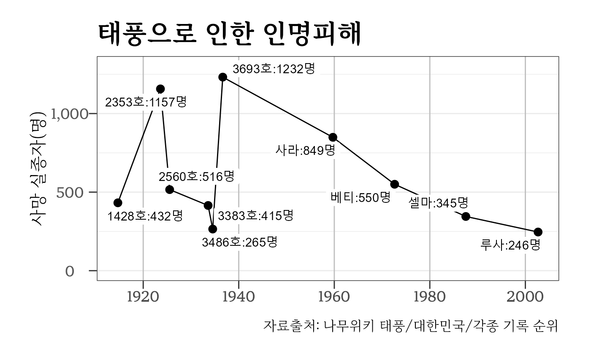
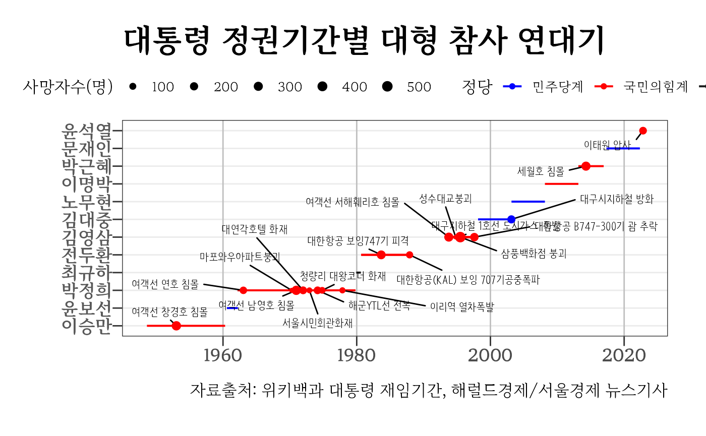

disaster.Rmd천재의 대표적인 사례로 대한민국에서는 태풍이 꼽히고 있다. 지구 온난화의 영향으로 갈수록 태풍이 강해지고 있음에도 불구하고 사망자수는 지속적으로 줄어들고 있어 태풍과 같은 자연재해에 대해 안전이 강화되고 있는 것이 데이터를 통해 확인되고 있다.
library(tidyverse)
#> ── Attaching packages ─────────────────────────────────────── tidyverse 1.3.1 ──
#> ✔ ggplot2 3.3.6 ✔ purrr 0.3.4
#> ✔ tibble 3.1.8 ✔ dplyr 1.0.10
#> ✔ tidyr 1.2.1 ✔ stringr 1.4.1
#> ✔ readr 2.1.2 ✔ forcats 0.5.2
#> Warning: package 'tibble' was built under R version 4.2.1
#> Warning: package 'tidyr' was built under R version 4.2.1
#> Warning: package 'dplyr' was built under R version 4.2.1
#> Warning: package 'stringr' was built under R version 4.2.1
#> Warning: package 'forcats' was built under R version 4.2.1
#> ── Conflicts ────────────────────────────────────────── tidyverse_conflicts() ──
#> ✖ dplyr::filter() masks stats::filter()
#> ✖ dplyr::lag() masks stats::lag()
library(rvest)
#>
#> Attaching package: 'rvest'
#> The following object is masked from 'package:readr':
#>
#> guess_encoding
library(ggrepel)
extrafont::loadfonts()
typoon_raw <- read_html("https://namu.wiki/w/%ED%83%9C%ED%92%8D/%EB%8C%80%ED%95%9C%EB%AF%BC%EA%B5%AD/%EA%B0%81%EC%A2%85%20%EA%B8%B0%EB%A1%9D%20%EC%88%9C%EC%9C%84",
encoding = 'utf-8') %>%
html_elements('table')
typoon_tbl <- typoon_raw %>%
html_table() %>%
.[[1]] %>%
slice(3:n()) %>%
mutate(시작일 = lubridate::ymd(X2),
종료일 = lubridate::ymd(X3),
사망 = parse_number(X5)) %>%
select(시작일, 종료일, 사망, 태풍명 = X4) %>%
mutate(기간 = lubridate::interval(시작일, 종료일)) %>%
mutate(지속일수 = lubridate::as.duration(기간) %>% as.numeric("days")) %>%
select(-기간)
typoon_g <- typoon_tbl %>%
ggplot(aes(x = 시작일, y = 사망)) +
geom_line() +
geom_point(size = 3) +
expand_limits(y = c(0, 1300)) +
geom_label_repel(aes(label = glue::glue("{태풍명}:{사망}명")),
label.size = NA) +
scale_y_continuous(labels = scales::comma) +
labs(x = "", y = "사망 실종자(명)",
title = "태풍으로 인한 인명피해",
caption = "자료출처: 나무위키 태풍/대한민국/각종 기록 순위") +
theme_election()
typoon_g
# ggsave( glue::glue("inst/extdata/figure/typoon.png") ,
# typoon_g,
# device = ragg::agg_png,
# width = 250, height = 176, units = "mm", res = 600) 서울경제, 헤럴드경제 뉴스기사로 실린 통계자료를 결합하여 1950년 이후 대규모 참사에 대한 데이터를 생성한다.
## 해럴드경제 뉴스(2014)
# http://news.heraldcorp.com/view.php?ud=20140417000274
herald_raw <- read_lines(glue::glue("{here::here()}/data-raw/herald_news_disaster.txt"))
herald_tbl <- herald_raw %>%
as_tibble() %>%
slice(2:n()) %>%
mutate(날짜 = str_extract(value,
pattern = "\\d{4}년\\s?\\d{1,2}월\\s?\\d{1,2}일") %>%
lubridate::ymd(.)) %>%
mutate(사망 = str_extract(value, pattern = "\\d{1,4}명$") %>%
parse_number(.)) %>%
mutate(참사내역 = str_remove(value, pattern = "\\d{1,4}명$") %>%
str_remove(pattern = "\\d{4}년\\s?\\d{1,2}월\\s?\\d{1,2}일") %>%
str_trim(.)) %>%
select(날짜, 사망, 참사내역)
herald_tbl
#> # A tibble: 17 × 3
#> 날짜 사망 참사내역
#> <date> <dbl> <chr>
#> 1 1953-01-09 330 여객선 창경호 침몰
#> 2 1963-01-18 138 여객선 연호 침몰
#> 3 1970-04-08 33 마포와우아파트붕괴
#> 4 1970-12-15 323 여객선 남영호 침몰
#> 5 1971-12-25 165 대연각호텔 화재
#> 6 1972-12-02 51 서울시민회관화재
#> 7 1974-02-22 157 해군YTL선 전복
#> 8 1974-11-03 88 청량리 대왕코너 화재
#> 9 1977-11-11 59 이리역 열차폭발
#> 10 1983-09-01 269 대한항공 보잉747기 피격
#> 11 1987-11-29 115 대한항공(KAL) 보잉 707기공중폭파
#> 12 1993-10-10 292 여객선 서해훼리호 침몰
#> 13 1994-10-21 32 성수대교붕괴
#> 14 1995-04-28 101 대구지하철 1호선 도시가스·폭발
#> 15 1995-06-29 502 삼풍백화점 붕괴
#> 16 1997-08-06 225 대한항공 B747-300기 괌 추락
#> 17 2003-02-18 192 대구시지하철 방화
## 서울경제
# https://www.sedaily.com/NewsView/26CJW8PC06
big_disaster_raw <- tribble(
~"날짜",~"사망",~"부상",~"참사내역",
"1994-10-21",32,17,"성수대교 붕괴",
"1995-06-29",502,937,"삼풍백화점 붕괴",
"2003-02-18",192,151,"대구 지하철 방화",
"2014-04-16",299,5,"세월호 침몰",
"2022-10-29",154,132,"이태원 압사")
big_disaster <- big_disaster_raw %>%
mutate(날짜 = lubridate::ymd(날짜))
# big_disaster
disaster_tbl <- big_disaster %>%
filter(날짜 >= as.Date("2014-01-01")) %>%
bind_rows(herald_tbl) %>%
select(-부상) %>%
arrange(날짜)
disaster_tbl
#> # A tibble: 19 × 3
#> 날짜 사망 참사내역
#> <date> <dbl> <chr>
#> 1 1953-01-09 330 여객선 창경호 침몰
#> 2 1963-01-18 138 여객선 연호 침몰
#> 3 1970-04-08 33 마포와우아파트붕괴
#> 4 1970-12-15 323 여객선 남영호 침몰
#> 5 1971-12-25 165 대연각호텔 화재
#> 6 1972-12-02 51 서울시민회관화재
#> 7 1974-02-22 157 해군YTL선 전복
#> 8 1974-11-03 88 청량리 대왕코너 화재
#> 9 1977-11-11 59 이리역 열차폭발
#> 10 1983-09-01 269 대한항공 보잉747기 피격
#> 11 1987-11-29 115 대한항공(KAL) 보잉 707기공중폭파
#> 12 1993-10-10 292 여객선 서해훼리호 침몰
#> 13 1994-10-21 32 성수대교붕괴
#> 14 1995-04-28 101 대구지하철 1호선 도시가스·폭발
#> 15 1995-06-29 502 삼풍백화점 붕괴
#> 16 1997-08-06 225 대한항공 B747-300기 괌 추락
#> 17 2003-02-18 192 대구시지하철 방화
#> 18 2014-04-16 299 세월호 침몰
#> 19 2022-10-29 154 이태원 압사
library(lubridate)
#>
#> Attaching package: 'lubridate'
#> The following objects are masked from 'package:base':
#>
#> date, intersect, setdiff, union
## 대통령 재임기간
president <- tribble(~"이름", ~"시작일", ~"종료일",
"이승만", "1948-08-15", "1960-04-26",
"윤보선", "1960-08-02", "1962-03-22",
# "박정희", "1962-03-22", "1963-12-16", 박정희 권한대행
# "박정희", "1963-12-17", "1979-10-26",
"박정희", "1962-03-22$", "1979-10-26", # 권한대행 포함
"최규하", "1979-12-06", "1980-08-16",
"전두환", "1980-09-01", "1988-02-24",
"노태우", "1988-02-25", "1993-02-24",
"김영삼", "1993-02-25", "1998-02-24",
"김대중", "1998-02-25", "2003-02-24",
"노무현", "2003-02-25", "2008-02-24",
"이명박", "2008-02-25", "2013-02-24",
"박근혜", "2013-02-25", "2016-12-09",
"문재인", "2017-05-10", "2022-05-09",
"윤석열", "2022-05-10", "2022-10-31")
president_tbl <- president %>%
mutate(`시작일` = lubridate::ymd(`시작일`),
`종료일` = lubridate::ymd(`종료일`)) %>%
mutate(임기 = lubridate::interval(시작일, 종료일)) %>%
mutate(재임기간 = lubridate::as.duration(임기) %>% as.numeric("years"))
president_tbl
#> # A tibble: 13 × 5
#> 이름 시작일 종료일 임기 재임기간
#> <chr> <date> <date> <Interval> <dbl>
#> 1 이승만 1948-08-15 1960-04-26 1948-08-15 UTC--1960-04-26 UTC 11.7
#> 2 윤보선 1960-08-02 1962-03-22 1960-08-02 UTC--1962-03-22 UTC 1.63
#> 3 박정희 1962-03-22 1979-10-26 1962-03-22 UTC--1979-10-26 UTC 17.6
#> 4 최규하 1979-12-06 1980-08-16 1979-12-06 UTC--1980-08-16 UTC 0.695
#> 5 전두환 1980-09-01 1988-02-24 1980-09-01 UTC--1988-02-24 UTC 7.48
#> 6 노태우 1988-02-25 1993-02-24 1988-02-25 UTC--1993-02-24 UTC 5.00
#> 7 김영삼 1993-02-25 1998-02-24 1993-02-25 UTC--1998-02-24 UTC 5.00
#> 8 김대중 1998-02-25 2003-02-24 1998-02-25 UTC--2003-02-24 UTC 5.00
#> 9 노무현 2003-02-25 2008-02-24 2003-02-25 UTC--2008-02-24 UTC 5.00
#> 10 이명박 2008-02-25 2013-02-24 2008-02-25 UTC--2013-02-24 UTC 5.00
#> 11 박근혜 2013-02-25 2016-12-09 2013-02-25 UTC--2016-12-09 UTC 3.79
#> 12 문재인 2017-05-10 2022-05-09 2017-05-10 UTC--2022-05-09 UTC 5.00
#> 13 윤석열 2022-05-10 2022-10-31 2022-05-10 UTC--2022-10-31 UTC 0.476재난 데이터(disaster_tbl)와 대통령 임기
데이터(president_tbl)를 결합하여 하나의 데이터로
제작한다.
itaewon_list <- list(disaster = disaster_tbl,
president = president_tbl)재임기간 중 평균 재난 횟수를 내림차순으로 정리한다.
president_disaster <- itaewon_list$president %>%
group_by(이름) %>%
mutate(재난횟수 = sum(itaewon_list$disaster$날짜 %within% 임기)) %>%
ungroup() %>%
mutate(재임기간 = lubridate::as.duration(임기) %>% as.numeric("years")) %>%
select(-임기) %>%
mutate(연도별평균재난횟수 = 재난횟수/재임기간) %>%
arrange(desc(연도별평균재난횟수))
president_disaster
#> # A tibble: 13 × 6
#> 이름 시작일 종료일 재임기간 재난횟수 연도별평균재난횟수
#> <chr> <date> <date> <dbl> <int> <dbl>
#> 1 윤석열 2022-05-10 2022-10-31 0.476 1 2.10
#> 2 김영삼 1993-02-25 1998-02-24 5.00 5 1.00
#> 3 박정희 1962-03-22 1979-10-26 17.6 8 0.455
#> 4 전두환 1980-09-01 1988-02-24 7.48 2 0.267
#> 5 박근혜 2013-02-25 2016-12-09 3.79 1 0.264
#> 6 김대중 1998-02-25 2003-02-24 5.00 1 0.200
#> 7 이승만 1948-08-15 1960-04-26 11.7 1 0.0855
#> 8 윤보선 1960-08-02 1962-03-22 1.63 0 0
#> 9 최규하 1979-12-06 1980-08-16 0.695 0 0
#> 10 노태우 1988-02-25 1993-02-24 5.00 0 0
#> 11 노무현 2003-02-25 2008-02-24 5.00 0 0
#> 12 이명박 2008-02-25 2013-02-24 5.00 0 0
#> 13 문재인 2017-05-10 2022-05-09 5.00 0 0
show_disaster <- function(mask) {
itaewon_list$disaster %>%
mutate(mask = mask) %>%
filter(mask)
}
itaewon_tbl <- itaewon_list$president %>%
group_by(이름) %>%
mutate(재난여부 = list(itaewon_list$disaster$날짜 %within% 임기)) %>%
select(이름, 시작일, 종료일, 재난여부) %>%
mutate(재난 = map(재난여부, show_disaster)) %>%
unnest(재난) %>%
ungroup() %>%
select(이름, 시작일, 종료일, 재난발생일 = 날짜, 사망, 참사내역)
itaewon_tbl
#> # A tibble: 19 × 6
#> 이름 시작일 종료일 재난발생일 사망 참사내역
#> <chr> <date> <date> <date> <dbl> <chr>
#> 1 이승만 1948-08-15 1960-04-26 1953-01-09 330 여객선 창경호 침몰
#> 2 박정희 1962-03-22 1979-10-26 1963-01-18 138 여객선 연호 침몰
#> 3 박정희 1962-03-22 1979-10-26 1970-04-08 33 마포와우아파트붕괴
#> 4 박정희 1962-03-22 1979-10-26 1970-12-15 323 여객선 남영호 침몰
#> 5 박정희 1962-03-22 1979-10-26 1971-12-25 165 대연각호텔 화재
#> 6 박정희 1962-03-22 1979-10-26 1972-12-02 51 서울시민회관화재
#> 7 박정희 1962-03-22 1979-10-26 1974-02-22 157 해군YTL선 전복
#> 8 박정희 1962-03-22 1979-10-26 1974-11-03 88 청량리 대왕코너 화재
#> 9 박정희 1962-03-22 1979-10-26 1977-11-11 59 이리역 열차폭발
#> 10 전두환 1980-09-01 1988-02-24 1983-09-01 269 대한항공 보잉747기 피격
#> 11 전두환 1980-09-01 1988-02-24 1987-11-29 115 대한항공(KAL) 보잉 707기공중폭…
#> 12 김영삼 1993-02-25 1998-02-24 1993-10-10 292 여객선 서해훼리호 침몰
#> 13 김영삼 1993-02-25 1998-02-24 1994-10-21 32 성수대교붕괴
#> 14 김영삼 1993-02-25 1998-02-24 1995-04-28 101 대구지하철 1호선 도시가스·폭발
#> 15 김영삼 1993-02-25 1998-02-24 1995-06-29 502 삼풍백화점 붕괴
#> 16 김영삼 1993-02-25 1998-02-24 1997-08-06 225 대한항공 B747-300기 괌 추락
#> 17 김대중 1998-02-25 2003-02-24 2003-02-18 192 대구시지하철 방화
#> 18 박근혜 2013-02-25 2016-12-09 2014-04-16 299 세월호 침몰
#> 19 윤석열 2022-05-10 2022-10-31 2022-10-29 154 이태원 압사
library(ggrepel)
extrafont::loadfonts()
itaewon_viz <- itaewon_tbl %>%
bind_rows(itaewon_list$president %>%
select(이름, 시작일, 종료일) %>%
filter(이름 %in% c("문재인", "노무현", "이명박", "윤보선", "최규하"))) %>%
mutate(정당 = case_when(이름 %in% c("윤보선", "김대중", "노무현", "문재인") ~ "민주당계",
이름 == "최규하" ~ "무소속",
TRUE ~ "국민의힘계"))
itaewon_g <- itaewon_viz %>%
ggplot(aes(x = 시작일, y = fct_reorder(이름, 시작일)) ) +
geom_segment(aes(xend = 종료일, yend = 이름, color = 정당), size = 0.7) +
geom_label_repel(aes(x = 재난발생일, y = 이름, label = 참사내역), size = 3,
alpha = 1,
fill = NA,
min.segment.length = 0,
max.overlaps = Inf,
label.size = NA,
family = "NanumBarunPen") +
geom_point( aes(x = 재난발생일, y = 이름, size = 사망, color = 정당)) +
scale_size_continuous(range = c(1, 3)) +
theme_election() +
labs(x = "",
y = "",
title = "대통령 정권기간별 대형 참사 연대기",
size = "사망자수(명)",
caption = "자료출처: 위키백과 대통령 재임기간, 해럴드경제/서울경제 뉴스기사") +
scale_color_manual(values = c("민주당계" = "blue",
"국민의힘계" = "red",
"무소속" = "gray10"))
itaewon_g
#> Warning: Removed 5 rows containing missing values (geom_label_repel).
#> Warning: Removed 5 rows containing missing values (geom_point).
# ggsave( glue::glue("inst/extdata/figure/itaewon.png") ,
# itaewon_g,
# device = ragg::agg_png,
# width = 250, height = 176, units = "mm", res = 600)
library(gt)
#> Warning: package 'gt' was built under R version 4.2.1
disaster_gt <- disaster_tbl %>%
arrange(desc(날짜)) %>%
mutate(날짜 = format(날짜, "%Y년 %m월 %d일")) %>%
gt() %>%
tab_header(
title = md("**🎗 역대 대형참사 🎗**"),
subtitle = md("*2022년 10월 29일 이태원 참사*")
) %>%
tab_options(
table.width = pct(77),
heading.background.color = "#8f3018", # R logo 파란색
heading.title.font.size = "20px",
column_labels.background.color = "#F7F7F7", # R logo 회색
column_labels.font.weight = "bold",
stub.background.color = "#ffffff",
stub.font.weight = "bold"
) %>%
cols_align(
align = "center",
columns = everything()
) %>%
tab_source_note(
source_note = md("**자료출처**: 헤럴드경제와 서울경제 뉴스기사")
) %>%
data_color(
columns = c(사망),
colors = scales::col_numeric(
palette = paletteer::paletteer_d(
palette = "ggsci::blue_material"
) %>% as.character(),
domain = NULL
)
) %>%
tab_style(style = list(cell_text(weight = 'bold',
size = "large",
color = "black")),
locations = cells_body(columns = 사망,
rows = 사망 >= 154)) %>%
tab_style(style = list(cell_text(weight = 'bold', size = "large")),
locations = cells_body(columns = c(날짜, 참사내역),
rows = 사망 >= 154))
disaster_gt| 🎗 역대 대형참사 🎗 | ||
| 2022년 10월 29일 이태원 참사 | ||
| 날짜 | 사망 | 참사내역 |
|---|---|---|
| 2022년 10월 29일 | 154 | 이태원 압사 |
| 2014년 04월 16일 | 299 | 세월호 침몰 |
| 2003년 02월 18일 | 192 | 대구시지하철 방화 |
| 1997년 08월 06일 | 225 | 대한항공 B747-300기 괌 추락 |
| 1995년 06월 29일 | 502 | 삼풍백화점 붕괴 |
| 1995년 04월 28일 | 101 | 대구지하철 1호선 도시가스·폭발 |
| 1994년 10월 21일 | 32 | 성수대교붕괴 |
| 1993년 10월 10일 | 292 | 여객선 서해훼리호 침몰 |
| 1987년 11월 29일 | 115 | 대한항공(KAL) 보잉 707기공중폭파 |
| 1983년 09월 01일 | 269 | 대한항공 보잉747기 피격 |
| 1977년 11월 11일 | 59 | 이리역 열차폭발 |
| 1974년 11월 03일 | 88 | 청량리 대왕코너 화재 |
| 1974년 02월 22일 | 157 | 해군YTL선 전복 |
| 1972년 12월 02일 | 51 | 서울시민회관화재 |
| 1971년 12월 25일 | 165 | 대연각호텔 화재 |
| 1970년 12월 15일 | 323 | 여객선 남영호 침몰 |
| 1970년 04월 08일 | 33 | 마포와우아파트붕괴 |
| 1963년 01월 18일 | 138 | 여객선 연호 침몰 |
| 1953년 01월 09일 | 330 | 여객선 창경호 침몰 |
| 자료출처: 헤럴드경제와 서울경제 뉴스기사 | ||